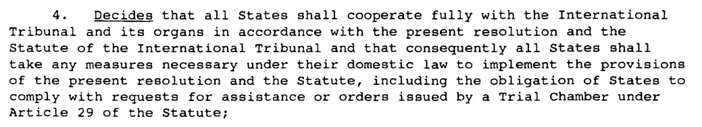

Exhibit · Resolution
UN Security Council Resolution 827 (1993), 25 May 1993
The passage
“Decides that all States shall cooperate fully with the International Tribunal and its organs in accordance with the present resolution and the Statute of the International Tribunal and that consequently all States shall take any measures necessary under their domestic law to implement the provisions of the present resolution and the Statute, including the obligation of States to comply with requests for assistance or orders issued by a Trial Chamber under Article 29 of the Statute;” Page 2, operative paragraph 4 of nine. The word ‘Decides’ is underlined in the original. Immediately above the operative paragraphs, on the same page, is the line ‘Acting under Chapter VII of the Charter of the United Nations’. The resolution is in English, so it is quoted here as it stands.

Why this document matters
In this resolution of 25 May 1993, which created the tribunal for the former Yugoslavia, the Security Council decides in its fourth operative paragraph, acting under Chapter VII of the Charter of the United Nations, that all states shall cooperate fully with the tribunal and comply with requests for assistance or orders issued by a Trial Chamber. The essay sets the vanished rolls of film beside this obligation, which also applied to the Netherlands, and takes it to include the production of evidence. When Giltay later asked the tribunal about the eight rolls of film that, according to lawyers for Dutchbat veterans, lie in the archive of the Military Intelligence and Security Service, the Office of the Prosecutor replied on 3 October 2017 that it had no knowledge of them.
Provenance
- Document
- Resolution of the United Nations Security Council, three pages, issued under General distribution
- Symbol
- S/RES/827 (1993)
- Title
- Resolution 827 (1993)
- Adopted
- By the Security Council at its 3217th meeting, on 25 May 1993
- Date
- 25 May 1993
- Subject
- The establishment of an international tribunal for the sole purpose of prosecuting persons responsible for serious violations of international humanitarian law committed in the territory of the former Yugoslavia between 1 January 1991 and a date to be determined by the Security Council
- Chapter VII
- The nine operative paragraphs are preceded on page 2 by the line ‘Acting under Chapter VII of the Charter of the United Nations’
- Cooperation
- Paragraph 4 obliges all states to cooperate fully with the tribunal, to take any measures necessary under their domestic law, and to comply with requests for assistance or orders issued by a Trial Chamber under Article 29 of the Statute
- Seat
- Paragraph 6 makes the determination of the seat of the tribunal subject to arrangements between the United Nations and the Netherlands acceptable to the Council
- Victims
- Paragraph 7 states that the work of the tribunal is without prejudice to the right of victims to seek compensation for damages
- References
- Resolution 713 (1991), resolution 780 (1992) and resolution 808 (1993); the report of the Secretary-General (S/25704 and Add.1), to which the Statute of the International Tribunal is annexed; the interim report of the Commission of Experts (S/25274); and the recommendation of the Co-Chairmen of the Steering Committee of the International Conference on the Former Yugoslavia (S/25221)
- Language
- English. The foot of page 1 carries the job number 93-30628 (E) and the date 250593
- Held by
- United Nations Digital Library, record 166567
- Web address
- digitallibrary.
un. (scan with an added text layer)org/ record/ 166567/ files/ S_RES_827(1993)-EN.pdf - See also
- ANP report on eight rolls of film, 28 November 2016Giltay to the ICTY Office of the Prosecutor, 24 September 2017ICTY Office of the Prosecutor to Giltay, 3 October 2017
Cited in: the essay ‘The Ban Fell, the Book Stood’ in the chapter (4) ‘A Cover-up with an International Dimension’.
Exhibit page: https://
Document: https://
Accessed 3 October 2026.

This page is an exhibit to the book The Cover-up General by Edwin Giltay and its accompanying website.